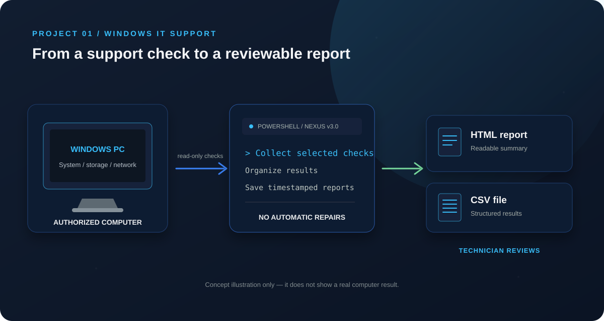

01 / THE PROBLEM
A clearer first look.
When a PC has a problem, a support technician may need to check several parts of Windows before deciding what to investigate next.
A read-only PowerShell toolkit that gathers selected Windows, hardware, network and support-service checks, then saves the results as HTML and CSV reports.

When a PC has a problem, a support technician may need to check several parts of Windows before deciding what to investigate next.
NEXUS gathers its supported checks in one script and saves a timestamped report. The technician reviews the findings and chooses the next step.
These are the checks in the supplied v3.0 script. Some results depend on the computer, permissions and network policy.
Windows version, computer model, processor, memory use, uptime and fixed-disk free space.
IPv4, gateway, DNS servers and adapters; DNS and HTTPS checks; and a short ping/latency check.
DHCP Client and Print Spooler service states, installed printers and visible print jobs.
Selected software and activation details, recent update/shutdown events and endpoint-protection service states.
Important: NEXUS does not repair the computer. A failed ping alone does not prove the network is down, and a reported status is only a starting point for investigation.
Use the script on a Windows 10 or 11 computer you own or are authorized to support.
The script reads selected system details and runs its configured network and service checks.
A timestamped HTML report and CSV file are saved in a Reports folder beside the script.
Use the results as clues. Verify findings and follow your organization’s support process.
PowerShell is a Windows command-line tool and scripting language. A script is a saved set of instructions; NEXUS uses it to repeat selected checks and organize their output.
The v3.0 script is designed for read-only diagnostics and does not perform automatic repairs. Network tests contact Microsoft services and 1.1.1.1; follow local policy and use an authorized computer.
Download the actual v3.0 PowerShell script or the short presentation explaining its purpose, checks, workflow and limitations.
Before running a script, review it and follow your organization’s security rules. The included script asks for its configured access password; this simple prompt is not strong security.
“NEXUS is a read-only Windows diagnostics project written in PowerShell. It checks selected system, storage, network and support-service information, then creates HTML and CSV reports. I use the results to practise structured troubleshooting; the script does not automatically repair problems.”
A generated illustration and presentation help explain the project; they are not screenshots or proof of a successful run. Add real results only after testing the script on an authorized Windows computer.